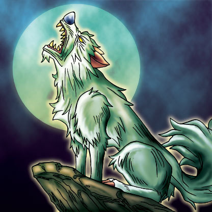

Silver Fang

STATS
ATK: 1200
DEF: 800DECK COST
Deck Cost per Card: 20Fusion List (45 Possible Fusions)
- Silver Fang + Abyss Flower = Flower Wolf
- Silver Fang + Armaill = Flame Cerebrus
- Silver Fang + Bat = Dice Armadillo
- Silver Fang + Candle of Fate = Flame Cerebrus
- Silver Fang + Dancing Elf = Nekogal #2
- Silver Fang + Dark Plant = Flower Wolf
- Silver Fang + Dark Witch = Nekogal #2
- Silver Fang + Darkworld Thorns = Flower Wolf
- Silver Fang + Dharma Cannon = Dice Armadillo
- Silver Fang + Dragon Statue = Tiger Axe
- Silver Fang + Eldeen = Nekogal #2
- Silver Fang + Fire Eye = Flame Cerebrus
- Silver Fang + Fire Reaper = Flame Cerebrus
- Silver Fang + Firegrass = Flame Cerebrus
- Silver Fang + Flame Swordsman = Flame Cerebrus
- Silver Fang + Goddess with the Third Eye = Nekogal #2
- Silver Fang + Hinotama Soul = Flame Cerebrus
- Silver Fang + Hoshiningen = Nekogal #2
- Silver Fang + Ice Water = Nekogal #2
- Silver Fang + Jinzo #7 = Dice Armadillo
- Silver Fang + Kagemusha of the Blue Flame = Flame Cerebrus
- Silver Fang + Kageningen = Tiger Axe
- Silver Fang + Key Mace = Nekogal #2
- Silver Fang + LaMoon = Nekogal #2
- Silver Fang + M-Warrior #1 = Tiger Axe
- Silver Fang + Magician of Faith = Nekogal #2
- Silver Fang + Man-Eating Plant = Flower Wolf
- Silver Fang + Man Eater = Flower Wolf
- Silver Fang + Mavelus = Flame Cerebrus
- Silver Fang + Mushroom Man = Flower Wolf
- Silver Fang + Mystical Elf = Nekogal #2
- Silver Fang + Petit Angel = Garvas
- Silver Fang + Princess of Tsurugi = Nekogal #2
- Silver Fang + Queen's Double = Nekogal #2
- Silver Fang + Queen of Autumn Leaves = Nekogal #2
- Silver Fang + Rainbow Flower = Flower Wolf
- Silver Fang + Skelengel = Garvas
- Silver Fang + Steel Scorpion = Dice Armadillo
- Silver Fang + Swordsman from a Foreign Land = Tiger Axe
- Silver Fang + Tentacle Plant = Flower Wolf
- Silver Fang + Water Element = Nekogal #2
- Silver Fang + Water Magician = Nekogal #2
- Silver Fang + Waterdragon Fairy = Nekogal #2
- Silver Fang + White Dolphin = Tatsunootoshigo
- Silver Fang + Wings of Wicked Flame = Flame Cerebrus